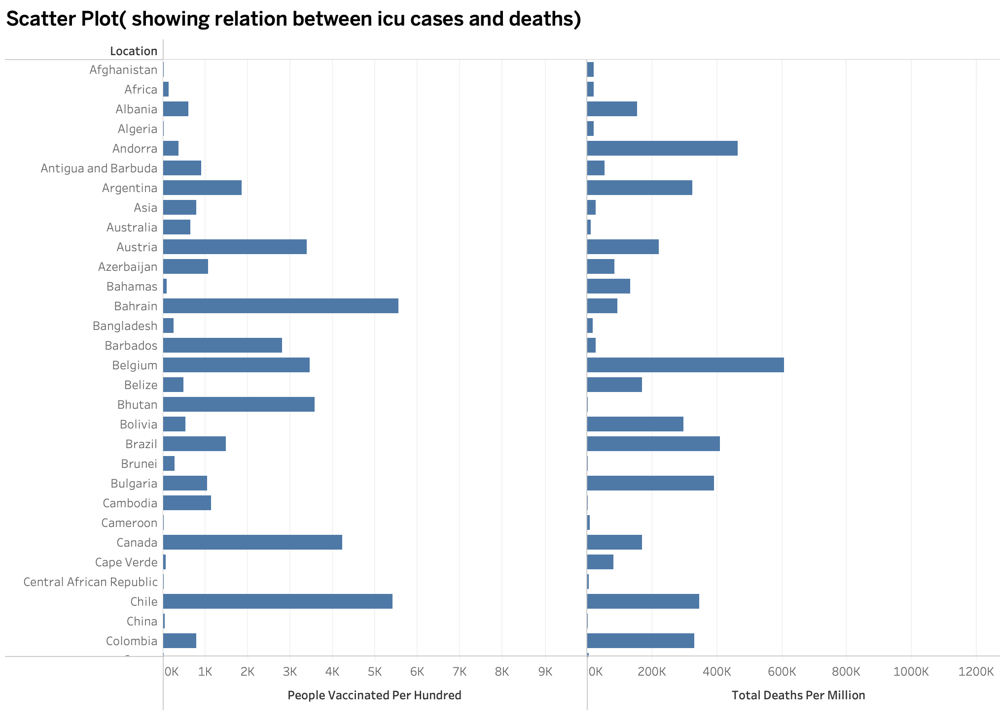
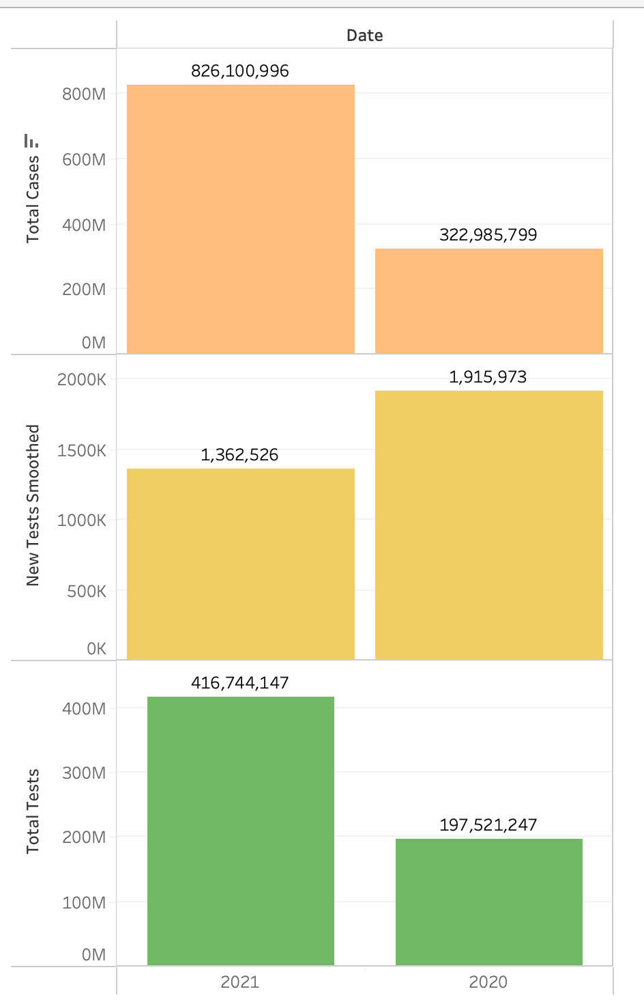
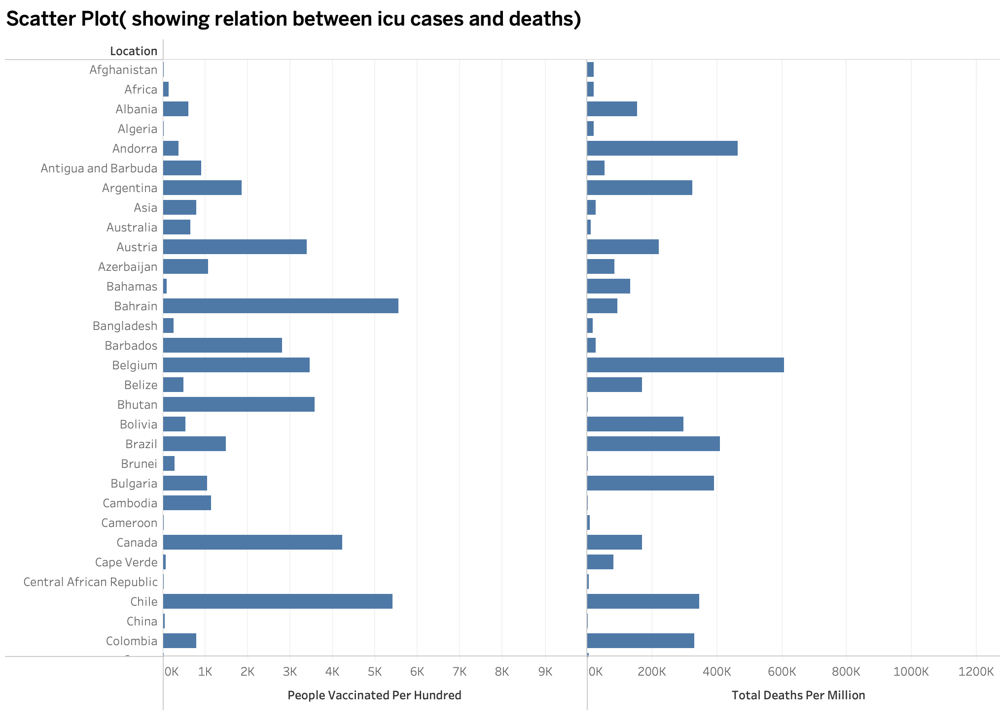
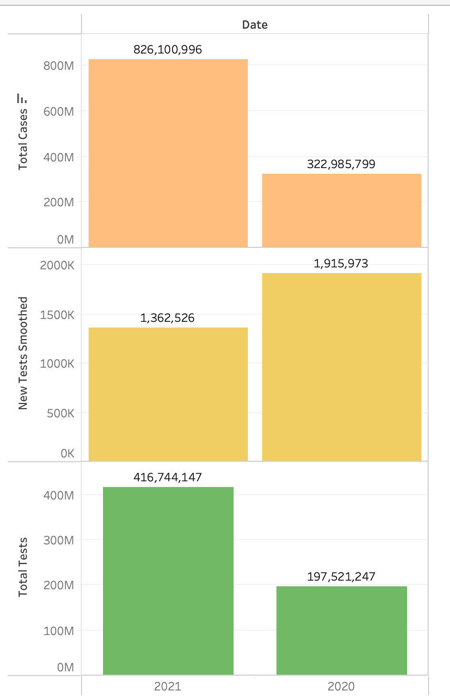

Key Insights
1. Testing and Cases
Testing volumes increased significantly in 2021 compared to 2020, enabling better tracking and management of the pandemic. Regions with higher testing rates demonstrated lower case fatality rates, emphasizing the importance of widespread testing.
2. Vaccination Progress
Higher vaccination rates correlate with significantly reduced mortality rates, highlighting the effectiveness of vaccines in mitigating severe outcomes and controlling the spread of the virus.
3. Healthcare Strain
A strong relationship between ICU cases and deaths underscores the critical role of healthcare infrastructure. Countries with robust ICU and hospital facilities managed to reduce mortality rates despite high case counts.
4. Regional Disparities
Geographic and economic disparities significantly influenced outcomes. Wealthier regions with better healthcare systems and higher vaccination coverage reported fewer deaths per million compared to under-resourced regions.
5. Continental Trends
Asia and Europe reported the highest case numbers, but Africa, despite having fewer cases, faced challenges due to limited healthcare resources. This disparity underscores the global inequality in pandemic response.
Interactive Dashboard
Explore the interactive Tableau dashboard to visualize trends and insights from the COVID-19 dataset. Click the link below to access the dashboard:
View Tableau DashboardVisual Data Insights
Below are the visual representations from different sheets of the COVID-19 dataset, providing a deeper understanding of the trends and insights.
 



Conclusion
This analysis emphasizes the critical roles of testing, vaccination, and healthcare preparedness in mitigating the impact of pandemics. It also highlights the need for addressing global inequalities to improve resilience against future health crises.